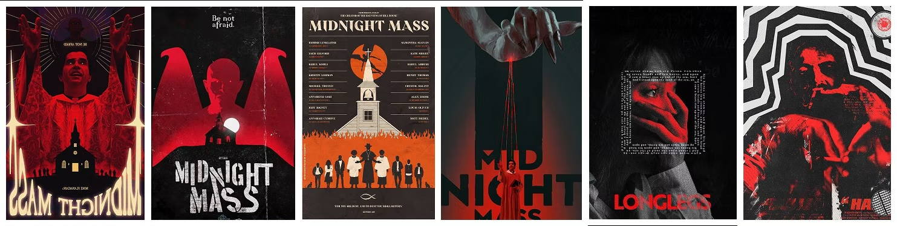
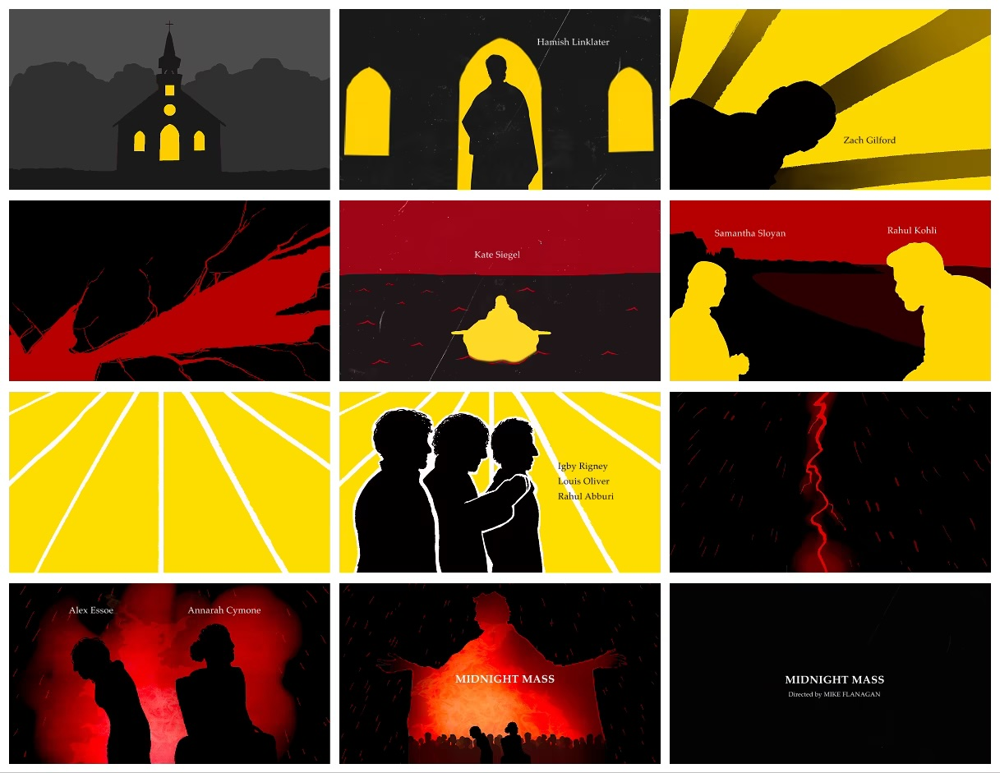

Motion design · Title sequence
Midnight
Mass
Midnight Mass doesn’t have a title sequence before each episode. This one introduces the series’s most important cast in a stark, symbolism-rich sequence.
01
Synopsis
After serving his jail sentence for killing a girl while drunk driving, Riley Flynn returns to his home of Crockett Island, a small and religious island. The island’s priest is missing, and someone new has taken his place, bringing strange omens and miracles in his wake.
02
Moodboards


03
Keywords
- Texture
- Grain and grit.
- Bold
- Strong visual imagery.
- Tragedy
- A serious, sorrowful story.
- Vector
- Solid, stark graphics.
- Reverence
- Unending devotion.
- Fire
- A strong piece of symbolism.
- Guilt
- Shame over one’s actions.
- Stark
- Severe or bare.
- Devotion
- Fervent support.
- Darkness
- Midnight.
- Blood
- Wine red.
- Religion
- Mass.
04
Storyboard

05
Style frames

06
Final
The sequence was delivered in three formats: horizontal, square and vertical.